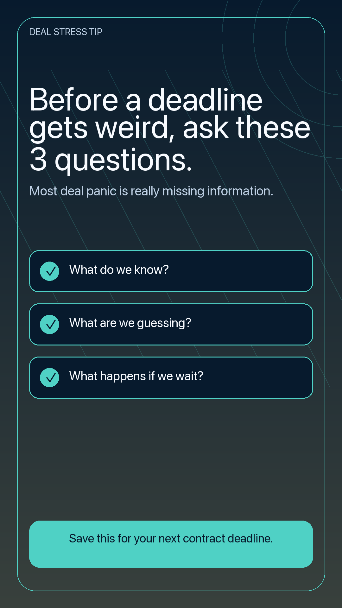

Ask a question and get a practical next step, plain-English client wording, and related places to keep learning.
REAL ESTATE TEAM KNOWLEDGE BASE
Turn your broker training library into an always-on agent coach.
Search every training, script, playbook, transaction process, and transcript, then ask questions and get answers in the brokerage’s own training language.
6sample trainings
8broker playbooks
37topic tags
LATEST TRAINING
Recent trainings agents can use now.
Keep the dashboard focused on the newest/highest-value trainings, then route the full video library to its own page.
MAIN FEATURE
Ask the Broker
Ask a real client or transaction question and get practical next steps, client wording, escalation flags, and source material to check.
WHY THIS IS DIFFERENT
Training that compounds instead of disappearing after the meeting.
Faster onboarding
Newer agents get first-pass guidance without waiting for the broker to answer the same question again.
More consistent scripts
Agents can start from language already aligned with the team’s standards and trainings.
Fewer repeat questions
Broker coaching turns into searchable answers, playbooks, and source trails.
Reusable training assets
Every recording can become transcripts, summaries, scripts, checklists, and Ask guidance.
AGENT MARKETING
Social assets live in their own workspace.
This stays as a lower dashboard module/CTA only. The full review surface lives on the Social Assets page.
Open Social Assets